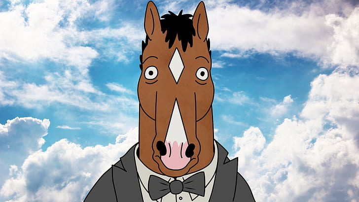

<div class="container" *ngIf="photos$">
  <div>
    <app-carousel [images$]="photos$"></app-carousel>
  </div>
  <div>
    <button mat-fab color="primary" (click)="dislike()">
      <mat-icon>delete</mat-icon>
    </button>
    <button mat-fab class="reverse" (click)="like()">
      <mat-icon>favorite</mat-icon>
    </button>
  </div>
</div>

<div *ngIf="!photos$" class="center">
  
</div>
